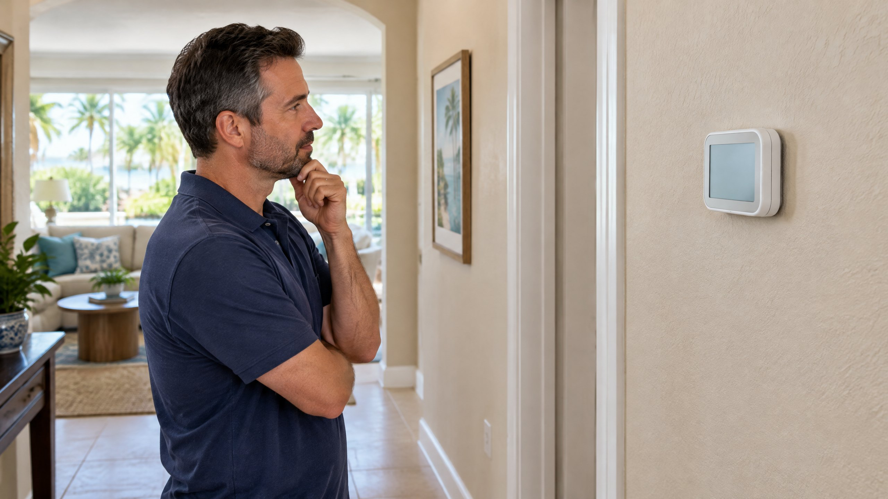

First Separate a Running Blower From Cooling That Will Not Stop
A thermostat's system mode and fan setting do different jobs. The system mode requests cooling or heating. On many conventional systems, selecting Fan On keeps the indoor blower moving air even when the compressor is not cooling. Trane explicitly distinguishes this indoor circulation from an AC unit that continues running. [1]
That matters when you say “I turned the AC off.” Air at a supply register is not proof that the outdoor compressor is still operating. Notice whether you changed the cooling mode to Off or only changed the requested temperature. Record the fan setting separately. Our AC fan Auto-versus-On explanation addresses continued indoor circulation; this article focuses on an apparent failure to stop cooling.
Use your own equipment's instructions for its controls. A communicating or variable-capacity system may manage its blower differently from a simple conventional thermostat. Do not assign a universal shutdown delay, or assume every remaining sound means the same component is running.
What Does Setting the Thermostat to Off Establish?
Off is a control selection, not an electrical disconnect. If cooling appears to continue after you select Off, the request may not be reaching or controlling the equipment as intended. Trane identifies thermostat problems, wiring conditions and electrical switching faults as possible reasons for AC operation that does not stop. [1] The homeowner observation alone does not identify which part failed.
Confirm what the display actually says after using the normal user controls. Note whether it still shows cooling, whether the target changed, or whether an app and wall control disagree. Do not remove the thermostat, disconnect wires, open electrical compartments or manipulate an outdoor switch to test a diagnosis. A control that does not stop the equipment needs prompt professional assessment.
If you cannot stop unwanted operation through normal controls, explain that clearly when requesting AC repair. Ask for immediate guidance appropriate to the installed equipment. Do not keep repeating on-and-off commands, and do not treat Off as proof the equipment has no electrical power.
A Long Cooling Call Is a Different Question
An AC that is still being asked to cool can run longer because the requested temperature has not been reached. Trane's troubleshooting page includes dirty filters, dirty coils and equipment sizing among reasons for prolonged operation. Those explanations concern difficulty satisfying the cooling demand; they do not, by themselves, explain a unit continuing after a valid Off command. [1]
In Tampa, outdoor heat, the building and the selected target can affect the cooling demand. Some systems also change capacity during operation. Runtime alone is not a diagnosis. Do not apply one fixed cycle length to every home or equipment type, and do not buy a larger system just because a cycle was lengthy.
If the actual concern is a home that stays warm while the AC runs, see AC running but not cooling. Describe that separately from “the outdoor equipment continues after I selected Off.” The distinction helps keep the inspection focused on the right operating condition.
Could a Schedule or App Be Changing the Request?
Programmable thermostats can change targets on schedules. DOE explains that smart controls can also use occupancy, remote access and adaptive recovery features. [2] A later target change may explain why a system resumes a cooling call. It does not prove that an unwanted run is normal, or that a failed shutdown is merely a scheduling issue.
Look at the current mode, target and any visible hold or schedule status. If another household member uses the app, ask whether they changed it. Record what happened rather than resetting every setting or erasing the schedule. The technician needs the original sequence, especially if the wall control and app appear inconsistent.
A displayed cooling symbol is also not a measurement of compressor operation. Report both the display and what you observed from ordinary occupied areas. Keep model-specific indicators separate from a claim that the whole system is responding correctly.
Why a Contactor Is a Possibility, Not a Diagnosis
In many conventional outdoor units, a contactor switches power to equipment in response to the control circuit. Trane notes that a compressor contactor welded closed can maintain power and let the AC continue running. It describes that as an electrical repair requiring a professional. [1]
Do not infer a welded contactor from a sound, a fan spinning, or the thermostat being set to Off. The technician must establish the actual control request and switching behavior for that model. Our contactor explanation covers the component's role. If a fault is confirmed, the appropriate AC contactor replacement scope should follow that diagnosis, not precede it.
What Should You Report Before the Visit?
Give a short sequence: the mode and fan setting before the change, the normal control you used, the resulting display, and what kept running afterward. If you have an existing photo of the screen, it may help. Do not approach moving or electrical equipment for a better recording.
Scroll the table sideways on a phone to see the complete distinction.
| Observation | What to tell the technician | What not to conclude |
|---|---|---|
| Air continues from indoor vents | System mode, fan setting and whether cooling seems to have stopped | Indoor airflow proves the compressor is running |
| Outdoor operation appears to continue after Off | Exact control change and the continuing sounds or visible operation | A contactor is definitely welded |
| Cooling resumes after a later target change | Schedule, hold, app activity and displayed mode | Every unexpected run is normal scheduling |
| Home remains warm during an active cooling call | Target, displayed room temperature and recent performance change | Failure to reach the target equals failure to obey Off |
What Should Professional Verification Include?
Ask the technician to identify whether the problem is the control request, its communication or wiring, the switching component, or a different equipment sequence. ENERGY STAR's maintenance checklist calls for checking system controls so equipment starts, operates and shuts off properly, along with electrical connections and other operating checks. [3]
After a repair, ask what was found and how the corrected start-and-stop response was demonstrated. If the original complaint also included inadequate cooling, that needs its own performance evaluation. Replacing a control part is not a substitute for explaining both symptoms, and an app showing Off is not completion evidence by itself.
Frequently Asked Questions
Can the indoor fan run when cooling is off?
Yes. Fan On can keep the indoor blower operating on many conventional systems even when the compressor is not cooling. Model-specific circulation sequences can also differ. Separate indoor airflow from continuing outdoor cooling before describing a failure to shut off.
Does a dirty filter explain cooling after I select Off?
A dirty filter can contribute to longer cooling calls while the system is trying to reach the target. It does not, by itself, establish why equipment continues after an Off command. That observation needs control and equipment-response assessment.
Does an AC that will not stop need a new thermostat?
Not automatically. Thermostat, wiring, communication and electrical switching problems are possibilities. The technician should establish the actual request and equipment response before recommending a replacement part.
Should I remove thermostat wires to see whether the AC stops?
No. Do not remove the thermostat or disconnect wiring as a homeowner test. Use normal user controls, report the exact continuing operation and obtain professional guidance if unwanted cooling does not stop.
Sources
- Trane: AC Won't Turn Off — indoor-fan distinction, possible thermostat and electrical faults, and longer cooling calls.
- DOE Building Science Education: HVAC Programmable Thermostats — schedules, occupancy features, remote control and adaptive recovery.
- ENERGY STAR: Maintenance Checklist — professional electrical and start/operate/shutoff control checks.
Editorial Source Review & Publisher
Published by On The Way Heating & Air for Tampa and North Tampa homeowners using the federal and manufacturer guidance above. This article helps describe an operating symptom; it does not diagnose a component, provide electrical instructions or prescribe a universal shutdown time.